OOF….. that was an emotional rollercoaster…. Now…. onto circle eight! Basically, there are different trenches in this circle, and I will briefly walk you through them… BUT BRIEFLY……

So here, we have the first trench, the Panderers and Seducers receive leashings from whips here….ouch…
At the second trench, the Flatterers must lie in a river of human feces… nasty right? That teaches us a lesson to not commit fraud right!!
In the third trench, the Simoniacs hang upside down in baptismal fonts while their feet burn with fire….. Also ouch…. So… no more fraud hehe…
Next in the fourth trench, the strologists or Diviners are forced to walk with their heads on backward…. Confusing… also ouch…
In the fifth trench, the Barrators, yea the people who accept bribes steep in pitch while demons tear them apart…. Lol….ouch again…
In the sixth trench, the hypocrites must forever walk in circles, wearing heavy robes made of lead…. Just tiring I guess… no ouch….
In the seventh trench, the thieves sit trapped in a pit of vipers, becoming vipers themselves when bitten…. Fun….
In the eighth trench of the eighth circle, we have evil counselors and advisers… lame….
In the ninth, the souls of Sowers of Scandal and Schism walk in a circle, constantly afflicted by wounds that open and close repeatedly… Also ouch…
In the tenth and final trench, falsifiers suffer from horrible plagues and diseases, which is… well… horrible…
WHEW!!! Well… that’s all for the eighth circle now…. Moving along… to the NEXT CIRCLE!!!!